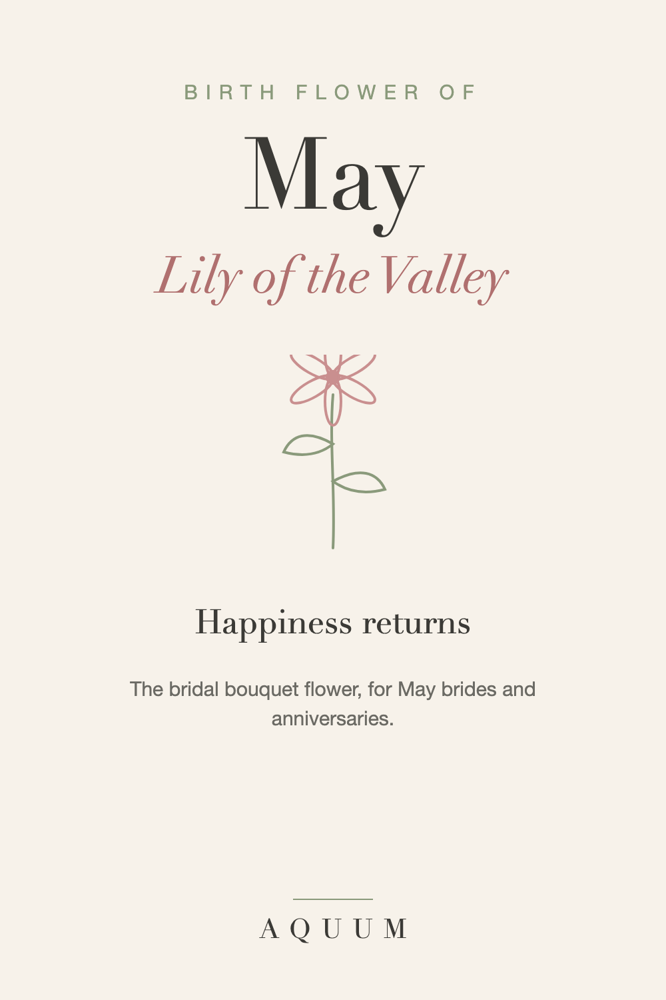

May Birth Flower: Lily of the Valley Meaning and Gift Ideas
2026-09-30
Written by the team behind Aquum, a small birth flower gift shop. How we make money.

May's birth flowers are the lily of the valley and the hawthorn. May is also wedding season, and the lily of the valley is one of the most loved bridal flowers of all.
What the lily of the valley means
Lily of the valley stands for the return of happiness and sweetness. Its tiny white bells and strong fragrance have made it a favorite in royal bridal bouquets, from Grace Kelly's to the Princess of Wales's.
The hawthorn, May's second flower
The hawthorn means hope. In old European traditions its blossoms marked the start of summer and were used to decorate homes on May Day.
A safety note
Lily of the valley is poisonous to people and pets if eaten. It's beautiful in a bouquet held by an adult, but a live plant isn't a good gift for a home with small children, dogs or cats. A lily of the valley design carries the meaning without the risk.
Who the lily of the valley suits
- Someone born in May
- A May bride, or a couple celebrating an anniversary
- Anyone who has come through a hard time and deserves something happy
May birth flower gift ideas
- A lily of the valley shirt, mug or tote, a keepsake for a May birthday or a bridal shower.
- Lily of the valley fragrance, one of the classic perfume notes.
- A card with its meaning, "happiness returns," which works for a birthday and a wedding alike.
Planning a May wedding? See our birth flower bridesmaid gifts.